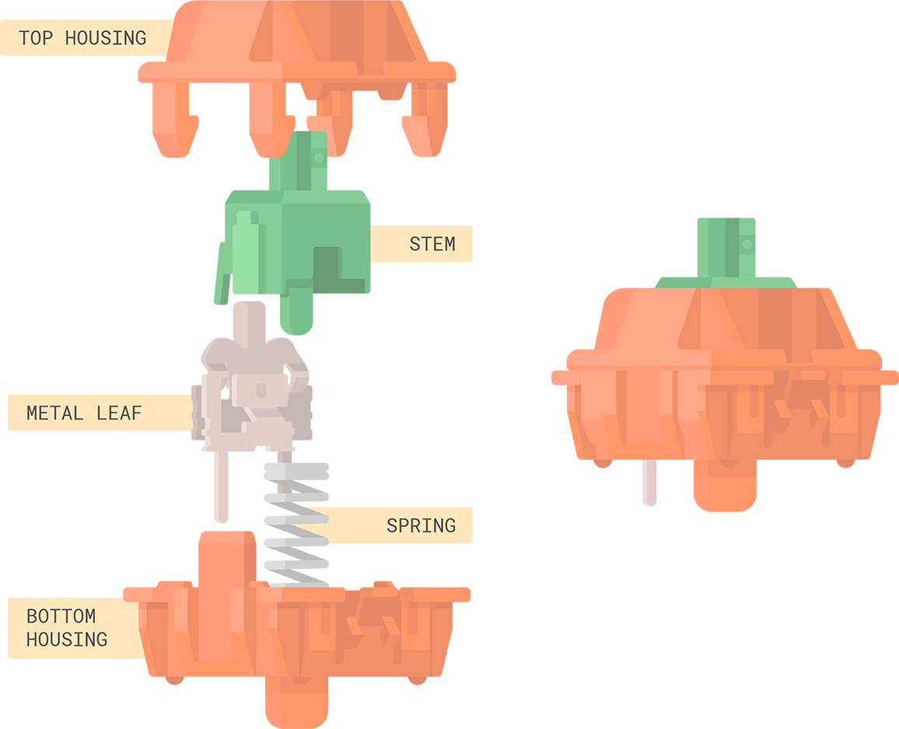
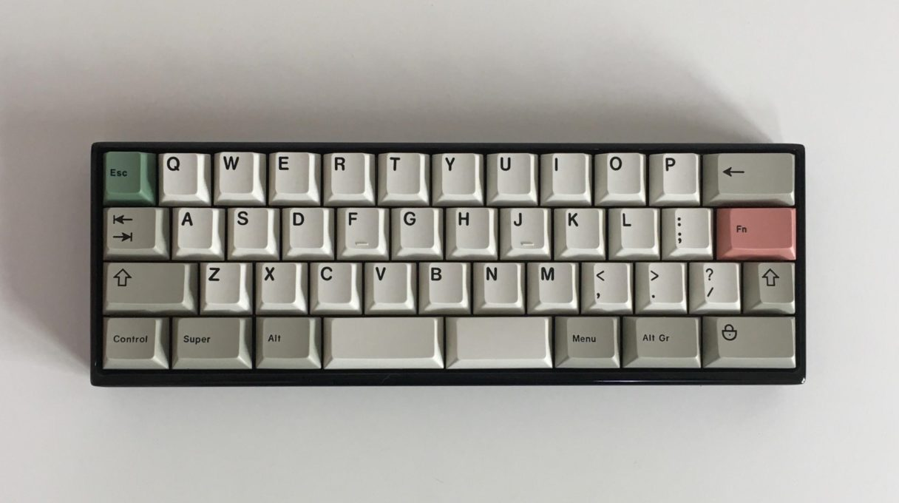
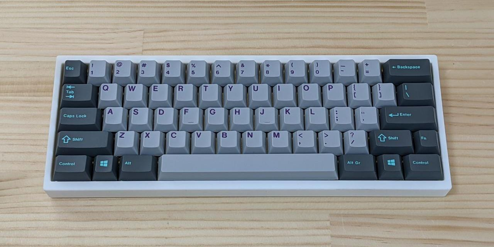
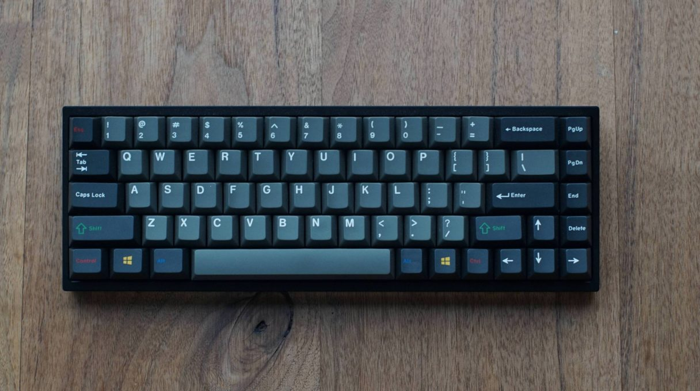
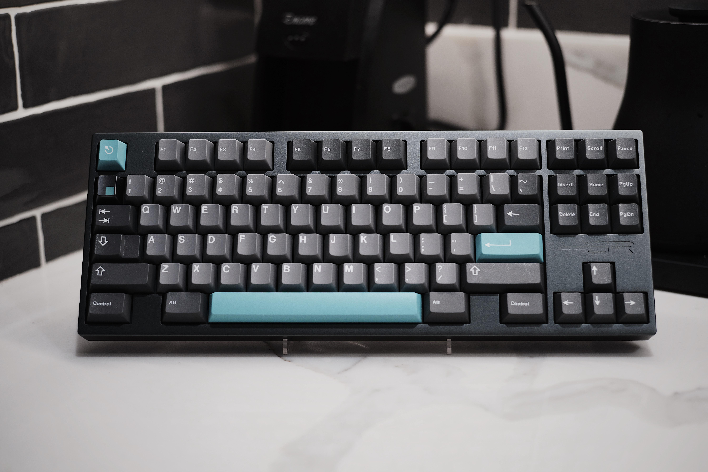

By Alex Zhang
Table Of Contents:
OVERVIEW
STRUCTURE
SWITCHES
KEYCAPS
LAYOUTS
MISCELLANEOUS
Mechanical keyboards are keyboards that use mechanical switches to register keypresses. This brief guide will detail their structure, parts, and various other facets of the hobby (*focusing on custom keyboards, not the common prebuilt ones) Created by Alex Zhang for the CSC500 final.
STRUCTUREKeyboards consist of three main parts, the case, PCB, and plate. When creating a custom keyboard, you often must buy the parts individually, but companies also sell kits that contain all three of the above. However, the switches and keycaps are never included. More on those later!

The case (figure 1 + 5) is what you see on the outside, while the PCB (figure 3) contains all the electronic parts, and the plate (figure 5) provides stability for the board. The plate is placed on top of the PCB and screwed in, and then mechanical switches can be inserted in. They must be soldered to the PCB, or in the case of "hotswap" PCBS, they can be inserted/removed easily, with no soldering or desoldering required.
Figure 2 and 4 in the image are dampening mats, and are not necessary + can be ignored - this certain kit provided them.
Switches are arguably the most important component of a mechanical keyboard. They register keypresses and transmit that information to the PCB.

This is the general structure of a mechanical switch. When the stem presses down, it pushes against the spring, and after a certain amount of "travel," the stem makes contact with the leaf. The leaf has two small metal prongs extending out of the bottom housing when the switch is fully assembled, and those prongs communicate with the PCB. The two prongs are also what must be soldered to the PCB!
Many different types of switches are available, each with different spring weights, materials for the housings and stem, colors, etc. However, there are three main classifications of switches: linear, tactile, and clicky switches.
Linear switches feature a smooth travel from top to bottom. The stem "legs" are completely smooth, and therefore when they make contact with the leaf, there is no resistance.
Tactile switches feature a tactile bump, which is very noticable. The stem legs feature a ridge that creates this feedback when they meet the leaf.
Clicky switches are tactile switches with an extra mechanism that produces an audible click when the switch is actuated. Everyone hates these because they are extremely loud, so I won't talk about them further.
Keycaps are another major factor of customizing your board. They are placed on the stem of each switch, and allow you to easily actuate the switches. They come in 2 main materials, ABS and PBT. PBT is favored for its high durability and thickness, while ABS has extremely vivid colors, but with the downside of "shining" after some use.
The most renowned company that produces keycaps is the German company GMK. They produce extremely high quality ABS sets that are considered some of the best in the hobby, but they come with a hefty pricetag.
There are many different layouts that keyboards can come in. Here are some of the most popular:
40%. This keyboard layout varies from board to board, but notably lacks some of the modifiers (shift, tab, etc.) and the entire number row. Using shortcuts/macros is required to access the missing keys.

60%. This layout features the alphanumeric keys (alphas), modifiers, and the number row.

65%. This layout is the 60% but with the added arrow keys and a vertical cluster of various "function" keys on the right hand side.

TKL, or "ten-key-less." This layout has this name because it has almost all the keys - lacking only the number pad.
